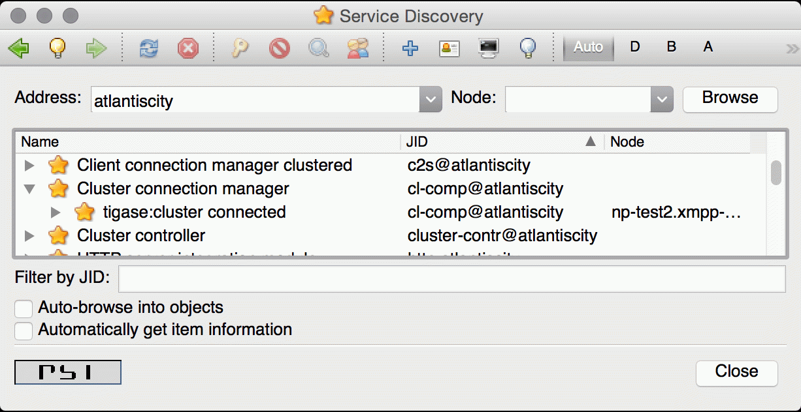

Tigase Clustering allows the use of a number of servers to be unified in delivering, from what a client or user sees, a single unified platform. There are two typical reasons why clustering should be employed:
High Availability
By using clustering, services can be provided with a high reliability and redundancy. By using a network of multiple servers, content or services can be served on any of the clustered servers maintaining a consistent uptime without relying on one machine.
Load Balancing
This type of cluster helps to distribute a workload over a number of servers to reduce bottlenecking from heavy resource loads on a particular server.
With Tigase, you don’t have to choose between either/or!
Tigase Clustering offers Full Redundancy and Automatic Load Balancing allowing addition of new nodes at runtime with a simple configuration. All without a severe tax on resource consumption.
All basic components support clustering configuration, and some may be turned on or off.
To enable Clustering on Tigase servers, use the following line in your init.properties file:
--cluster-mode=true
That’s it!
You can customize ports for the cluster component, just be sure that each clustered server also has the same settings so they can communicate.
--cl-comp-ports=4250,3540
You can fine tune each port configuration, however this is not typically needed.
Each port has it’s own details that can be manipulated VIA the following ports. Again THIS IS OPTIONAL
cl-comp/connections/4250/type[S]=accept cl-comp/connections/4250/socket[S]=plain cl-comp/connections/4250/ifc[s]=* cl-comp/connections/4250/remote-host[S]=localhost cl-comp/connections/4250/connections/tls/required[B]=false
Each node should have --cluster-mode=true enabled that you wish to connect to the cluster. They will automatically discover other nodes to connect to VIA Server to Server traffic. Nodes that are added or removed will be periodically updated.
You can customize the traffic going between clustered servers with a few options.
This setting will control the number of bytes sent over non-user connections. Namely, Server to Server or S2S connections.
--cm-ht-traffic-throttling=xmpp:25k:0:disc,bin:200m:0:disc
The format is as follows: {traffic-type}:{maximum-traffic}:{max-lifespan-traffic}:{action} - traffic-type Specifies the type of traffic controlled. This can either be XMPP or bin. XMPP limits the number of packets transferred, whereas bin limits the number of bytes transferred. - maximum-traffic Specifies how many bytes or packets may be sent within one minute. - max-lifespan-traffic Specifies how many bytes or packets may be sent within the lifetime of the connection. 0 means unlimited. - action Specifies the action to be taken which can be disc which disconnects the connection, or drop which will drop any data exceeding the thresholds.
This allows the specific use of a load balancing mechanism by selecting SeeOtherHostIfc implementation. For more details, see Tigase Load Balancing documentation.
While these options are still available these settings CAN be less reliable. Use ONLY if you need specific setups that cannot be accommodated by the automatic cluster mode.
You can still use the old method of specifying every node on each server. Server 3 needs the following set
--cluster-nodes=serv1.xmpp-test.org,serv2.xmpp-test.org
Server 2 needs
--cluster-nodes=serv1.xmpp-test.org,serv3.xmpp-test.org
and so on…
After setting up clustering you may want to verify that the clusters are operational. Right now it can be done in two manners - first by checking that there are actual network connections established between cluster nodes. The other is to check internal status of the server.
There are number of ways to check for opened connections, simplest one use command line. (Tigase uses port 5277 for cluster connections)
- Linux
$ lsof -iTCP:5277 -sTCP:ESTABLISHED -P -n
- Windows
C:\WINNT>netstat -anp tcp | find ":5277 "
Verifying clustering connectivity over XMPP protocol requires any XMPP client capable of XEP-0030: Service Discovery. It’s essential to remember that only an administrator (a user whose JID is configured as administrative) has access.
For the purpose of this guide a Psi client will be used. After successfully configuring and connecting to account with administrative privileges we need to access Service Discovery, either from application menu or from context menu of the particular account account:

In the Service Discovery window we need to find Cluster Connection Manager component. After expanding the tree node for the component a list of all cluster nodes will be presented with the current status (either connected or disconnected). Node column will contain actual hostname of the cluster node:
